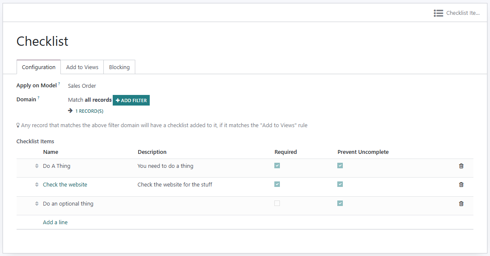

Add a checklist... to anything!
Checklist Anything is a simple, yet powerful, module that allows you to add checklists to any model in Odoo. Checklists can be added to any form view and can be set to be required before a record can be saved.
Domains can be used to apply checklists to specific records, and to block records from reaching certain states until all required checklist items are completed.
All checklists log the user who completed each item, and the time it was completed including if it was completed, uncompleted and then completed again. Admins can view the history of each checklist item.
No App dependencies required! Just install and go!
Configure checklists from Settings > Checklist Templates, or from the Settings > Technical > Checklist Templates menu in developer mode. Each checklist template can be associated with a model and any number of form views, or all forms for that model, or none and you modify the views yourself in Odoo Studio!
We're here to help! Head over to our contact page to ask us anything about our apps, or the other services we provide